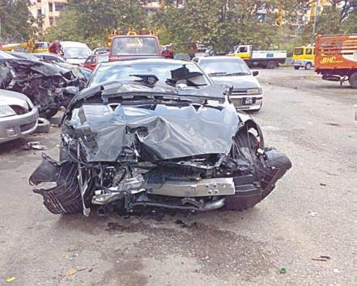
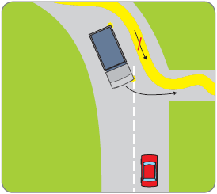
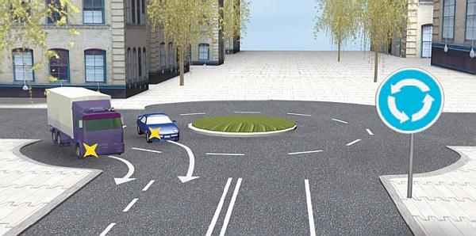

Причины возникновения дорожно-транспортных происшествий.
Если спросить простого обывателя о том, что, на его взгляд, является причиной дорожно-транспортных происшествий, он наверняка ответит: нарушение Правил дорожного движения. Однако такой ответ будет явно неполным, так как существует еще целый ряд причин, приводящих к авариям. Далее мы рассмотрим и проанализируем некоторые из этих причин.
Конечно, большинство аварий происходит
по причине недисциплинированности участников дорожного движения (водителей, пешеходов, велосипедистов и др.), пренебрегающих Правилами дорожного движения (рис. 7.11). Например, нарушение скоростного режима: кому из нас не доводилось видеть, как в зоне действия знака, разрешающего двигаться со скоростью не более 60 километров в час, некоторые автомобили «пролетают» намного быстрее.

Рис. 7.11. Он слишком быстро ехал…
«Популярностью» также пользуются следующие нарушения, приводящие к авариям: обгон в запрещенных местах, нарушение правил маневрирования (рис. 7.12), проезд на запрещающий сигнал светофора, игнорирование знаков приоритета.

Рис. 7.12. Грузовик поворачивает правильно, а желтой линией показано грубое нарушение правил маневрирования на повороте
Однако не только водители нарушают правила дорожного движения. Ничуть не лучше ведут себя пешеходы, которые либо переходят дорогу в неположенном месте (причем зачастую даже не удосужившись посмотреть по сторонам и убедиться в отсутствии в непосредственной близости транспортных средств), либо делают это на запрещающий сигнал светофора.
То же касается и велосипедистов: езда слишком далеко от края проезжей части, пренебрежение другими требованиями ПДД для многих чуть ли не в порядке вещей.
Еще одной распространенной причиной аварий является управление автомобилем в состоянии опьянения. Не будем подробно на этом останавливаться, поскольку данный вопрос достаточно полно освещен выше.
Часто причиной дорожно-транспортных происшествий является переутомление водителя (вплоть до засыпания за рулем).
Многие аварии случаются по причине технической неисправности автомобилей. Напомним, что существует законодательно утвержденный Перечень технических неисправностей, при наличии которых эксплуатация транспортных средств запрещается. Кроме того, с некоторыми неисправностями запрещено даже дальнейшее движение. Разница между эксплуатацией и дальнейшим движением заключается в том, что в первом случае вы имеете право доехать своим ходом к месту ремонта или стоянки, а во втором – любое дальнейшее движение запрещено и автомобиль придется буксировать либо везти на эвакуаторе.
Например, если в дороге у вас перегорела лампочка в фаре или вышел из строя стояночный тормоз, можете ехать к месту стоянки или ремонта, но последующая эксплуатация автомобиля разрешается только после устранения неисправностей. А вот если у вас отказали тормоза (например, педаль проваливается), рулевое управление или во время дождя не работают стеклоочистители, дальнейшее движение запрещено. Либо устраняйте неисправность на месте, либо (в случае со стеклоочистителями) дожидайтесь окончания дождя, либо доставляйте автомобиль к месту ремонта или стоянки путем буксировки либо с помощью эвакуатора.
Пренебрежение этими требованиями нередко приводит к серьезным дорожно-транспортным происшествиям. Например, при отказе рулевого управления автомобиль становится полностью неуправляемым и его может вынести как на полосу встречного движения, так и в кювет или на тротуар. Исключительно опасен также отказ тормозной системы, так как вы не сможете остановить машину при появлении препятствия и избежать аварии будет практически невозможно (особенно на перекрестке).
Распространенной причиной дорожно-транспортных происшествий является невнимательное отношение к другим участникам дорожного движения со стороны как водителей, так и пешеходов. Например, вы едете, ничего не нарушая, но в это время отвлеченно думаете о чем-то своем. Следовательно, притупляется внимание, вы не успеваете вовремя заметить появившегося на проезжей части пешехода и среагировать на изменение дорожной обстановки. Пусть даже пешеход и нарушил Правила дорожного движения, но если бы вы были внимательнее, то увидели бы его раньше и наезда удалось бы избежать. Что касается пешеходов, то, как мы уже неоднократно отмечали выше, многие из них выходят на проезжую часть там, где заблагорассудится, совершенно ничего не замечая вокруг.
По причине невнимательности водители часто не замечают загоревшиеся у впереди идущей машины стоп-сигналы, включившийся у другого автомобиля указатель поворота, теряют свою полосу движения и т. п. (рис. 7.13). Все это также в конечном итоге может привести к аварии.

Рис. 7.13. Не все умеют попасть в свою полосу после съезда с кругового перекрестка
Часто дорожно-транспортные происшествия случаются по причине неудовлетворительного состояния дорог. Эта тема настолько стара и избита (кто не слышал известную фразу: в России две беды – дураки и дороги), что здесь трудно что-то добавить. Кто из нас не сталкивался на дороге с ямами, ухабами, открытыми канализационными люками и иными «прелестями», возникающими по причине вопиющей халатности дорожных и иных служб. Между прочим, даже небольшого размера яма может стать причиной опрокидывания автомобиля либо выезда на полосу встречного движения при движении даже на невысокой скорости (иногда для этого бывает достаточно скорости 70–80 километров в час, а на скользкой дороге – и 30–40 километров в час).
Между прочим, если причиной аварии стало неудовлетворительное состояние дороги, то ответственность за дорожно-транспортное происшествие можно полностью или частично возложить на представителей дорожных служб со всеми вытекающими отсюда последствиями.
К серьезным дорожно-транспортным происшествиям нередко приводит неисправность технических средств организации дорожного движения. Наиболее типичный пример – неисправный светофор (имеется в виду именно неисправный, а не неработающий или с мигающим желтым сигналом). Хуже всего, когда на всех светофорах, установленных на перекрестке, включен зеленый сигнал. В этом случае возможна авария с самыми тяжелыми последствиями, ведь все автомобили будут двигаться на скорости на зеленый свет. Водители – участники дорожно-транспортного происшествия в такой ситуации виновными признаны не будут, так как ответственность полностью будут нести дорожные службы и ГИБДД.
Иногда бывает, что в одном направлении на испортившемся светофоре все время горит зеленый свет, а в другом – красный. Многие нетерпеливые водители в подобных случаях просто ждут, когда пересекаемая дорога будет пустой, и, выбрав момент, проезжают перекресток на запрещающий сигнал светофора. Если это приведет к дорожно-транспортному происшествию, водитель, поехавший на красный свет, будет признан виновником аварии, хотя часть вины следовало бы возложить на дорожные службы и ГИБДД, так как именно они не обеспечили нормальную работу дорожного оборудования.
Еще одна распространенная причина дорожных аварий – недостаточная подготовка водителей транспортных средств, причем как в части теории, так и в части практики. К сожалению, многие несознательные граждане получают водительские удостоверения по блату, являясь при этом самыми настоящими преступниками. И дело не только в том, что они нарушили порядок получения прав (не посещали автошколу, дали взятку экзаменатору в ГИБДД и т. д.), но и в том, что они подвергают опасности жизнь и здоровье других участников дорожного движения, поскольку не имеют должных навыков управления автомобилем. Такого «водителя» можно смело назвать потенциальным убийцей.
Кроме того, некоторые люди, отучившись в автошколе и получив права, долгое время не ездят за рулем. Кто-то пошел учиться просто «чтобы были права», кто-то планирует купить машину только через несколько лет, а учится сейчас «потому, что есть время». Когда же по истечении нескольких лет они в конце концов решают сесть за руль, то к этому моменту полностью забывают все, чему учили в автошколе. В данном случае водительское удостоверение дает таким водителям только юридическое право управлять автомобилем; но чтобы иметь еще и моральное право, необходимо попрактиковаться, чтобы вспомнить основные навыки и не создавать опасные ситуации на дороге.